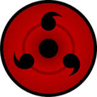

THE UCHIHAS ARE ONE OF THE POWERFUL CLANS IN THE NARUTO SERIES,HERE ARE SOME OF THE STRONGEST


The Sharingan (写輪眼, literally meaning: Copy Wheel Eye, meaning (Viz): Mirror Wheel Eye) is the dōjutsu kekkei genkai of the Uchiha clan that appears selectively among its members.[1] It is regarded as one of the "Three Great Dōjutsu", the others being the Byakugan and the Rinnegan.
[2] While its powers originated from Kaguya Ōtsutsuki's Rinne Sharingan, its independent form was first manifested by Indra Ōtsutsuki[3] (Hagoromo Ōtsutsuki in the anime).When a wielder of this kekkei genkai experiences a powerful emotional condition with regards to a person precious to them, their brain releases a special form of chakra that affects the optic nerves, transforming the eyes into Sharingan; for that reason the Sharingan is described as an "eye that reflects the heart" (心を写す瞳, Kokoro o utsusu hitomi).
Often, as per the Uchiha's so-called "Curse of Hatred", this emotion is a negative one, brought on by stress or loss.[6] The emotion can also be positive, driven by a desire to protect[7] or reunite with a loved one.In the anime, it was shown that usually after first acquiring this power, the user's enhanced perception will throw off their timing, causing them to overstress their bodies from trying to keep up with the increased reaction time, forcing the user to adjust to properly move with it.[9] A higher control of one's chakra is also required to maintain its power for long.[10] It was also shown during emotional states that begin to trigger the Sharingan's awakening, it can temporarily blur the person's eyesight until finally manifesting.[11] Assuming that the user is aware they have awakened the Sharingan,[6] they are thereafter able to freely use it.[12] When first awakened, each Sharingan usually will have only one tomoe (巴), although in some case, they immediately gained two tomoe in each of their eyes. Through emotional growth of extreme conditions, the Sharingan will continue to develop, its full maturation represented by a third tomoe. When Hagoromo awakened the Sharingan in the anime, he had all three tomoe immediately. All the Sharingan's abilities are available to the user from its earliest stage, but with greater development comes greater proficiency with those abilities. Example, with full maturation, the Sharingan's ability to perceive all targets and events around them is fully developed, which can cause the user's movements to drastically differ from their earlier movements if their Sharingan matured mid-battle.[13]
As with any dōjutsu, Sharingan can be transplanted into non-Uchiha.[14] They are unable to deactivate it and its use has a greater chakra demand for them than for actual Uchiha, who need only minimal chakra to keep it active. For these reasons, non-Uchiha tend to cover their Sharingan when they aren't using it in order to conserve chakra.[15] Sharingan that originate from the same Uchiha are still linked to some extent even when wielded by separate users, at times enabling those users to see the same things.The Sharingan grants the wielder two broad abilities: the "Eye of Insight" (洞察眼, Dōsatsugan) and the "Eye of Hypnotism" (催眠眼, Saimingan).[18] Although the abilities are not literally restricted to certain eyes, Madara Uchiha noted that the Sharingan can only be used to its full potential when both eyes are together.[19] Even within these two categories, there may exist several distinct though similar abilities:
"Eye of Insight" The user can see chakra, giving it colour in order to distinguish it by its composition and source.[20] Though not as capable in this regard as the Byakugan, it can see chakra through some (but not all) obstructions[21] and detect irregularities in a person's chakra flow, such as those caused by genjutsu influence. The user is granted incredible clarity of perception, enabling them to read lips[22] or mimic something like pencil movements.[23] Sasuke Uchiha's Sharingan was even able to see on a cellular level.[24] In combat, this allows them to see fast-moving objects and, once fully developed, offers some amount of predictive capabilities: they can anticipate an opponent's next move based on the slightest muscle tension in their body and act accordingly to dodge or intercept.[13] They can also read the enemy's hand seals to give them an insight of the performed technique's nature, regardless of the speed of performance, so long as the hands are not physically hidden from view.[25][26] Although a Sharingan user can see these things, they also need the physical ability to actually act on the visual information. In the anime, it is shown that with advanced enough prowess, via eye contact, the user can even enter the target's mind to look through their memories.[27], and even erase them within a long range for several targets.[28] The user is able to copy almost any jutsu they see, memorising ninjutsu, genjutsu, and taijutsu with near-perfect accuracy. They can then either perform that jutsu or modify it to suit their needs, as when Sasuke Uchiha bases his Lion Combo on Rock Lee's Front Lotus. Again, Sharingan users need the prerequisite abilities before they can mimic a jutsu they have seen, and for that reason they cannot, for example, reproduce kekkei genkai abilities they do not have or nature transformations they haven't learned to perform.
"Eye of Hypnotism" The user can perform what is generically called Genjutsu: Sharingan. While there are various manifestations and purposes of the ability, the better known one is to, through eye contact, suggest thoughts and actions to a target, coercing them to divulge information or act in a particular way, potentially without the target's awareness.[29] In extreme cases, the Sharingan user can take complete control of the target's body, forcing them to do exactly as the controller wishes; this control is visually indicated by the Sharingan's design appearing in the target's eye.[30] The Uchiha are particularly infamous for using this ability on the tailed beasts, and in fact can enter its or a jinchūriki's subconscious to more precisely control the beast's chakra.[31] Multiple targets can be taken control of in this way, though the more divided the user's attention is, the easier it is for targets to escape this control.[32] While not an ability per se, the Sharingan user can appear as if they are able to "see the future". First, the user must perfectly mimic every move their opponent makes and possibly their thoughts and words through careful observation. Then, they suggest an action to the opponent such as hand seals for a technique that the opponent and Sharingan user already know and copy that. With these things done, the user can complete the action even before the opponent does, possibly using the Sharingan's genjutsu to confuse or delay them. In addition to these abilities there are two other jutsu that a Sharingan user can perform: Izanagi allows the user to warp reality for a short time, changing reality into illusion and illusion into reality, thus escaping death and rewriting destiny;[33] Izanami traps the victim in an infinite loop disregarding the target's five senses, specifically designed as a reprimand for those who would abuse Izanagi.[34] Use of either ability causes the Sharingan with which it is performed to be blinded afterwards, and for that reason the Uchiha classified them as kinjutsu.
Transformations The Sharingan can be evolved into the Mangekyō Sharingan by experiencing the trauma of loss, granting unique, user-specific jutsu in addition to the Sharingan's standard abilities. Awakening the Mangekyō Sharingan will automatically fully mature a Sharingan if it isn't already.[35] Use of the Mangekyō Sharingan causes blindness over time, but this can be negated by transplanting another pair of Mangekyō Sharingan from a close relative, such as a sibling, to acquire "eternal" Mangekyō that never lose their sight. A Sharingan can become the Rinnegan, through mixing both Asura's chakra and Indra's chakra, which will bring out Hagoromo Ōtsutsuki's chakra.[36] Both of Madara Uchiha's Sharingan became Rinnegan several decades after he integrated Hashirama Senju's DNA into his body.[37] Sasuke Uchiha's left Sharingan became a Rinnegan after acquiring half of Hagoromo Ōtsutsuki's chakra. As shown with Madara, the awakening of the Rinnegan restores full eyesight to the eyes fixing the blindness caused from using Izanagi. In the anime, Hagoromo Ōtsutsuki was shown awakening his Mangekyō Sharingan and his Rinnegan, through a similar method that other wielders awaken their own Mangekyō. Hagoromo's Rinnegan was unique in that it awakened simultaneously with his Mangekyō, and skipped over it entirely in the process. Trivia The kanji "Rin" (輪, literally meaning: Wheel) is also used in Rinnegan and Rinne Sharingan, potentially linking the three terms etymologically. Kishimoto stated in the third databook that if a Sharingan user and a Byakugan user were to mate, their offspring would have one Byakugan and one Sharingan. From what characters have noted, this dōjutsu apparently "glows" in the dark.[38][39] In the anime, two of Sasori's hundred puppets are seen with what appear to be Sharingan.[40] Although the Sharingan originated from Kaguya Ōtsutsuki's Rinne Sharingan, it was rumoured to be derived from the Byakugan.[41] In the novel, Itachi Shinden: Book of Bright Light, activating the Sharingan is described as dyeing the user's vision red, in addition to allowing them to see chakra. Denki Kaminarimon has developed a Lightning Release Suit containing a motion sensor that allows him to predict his opponents movements, which Sarada has compared to the Sharingan.[42]